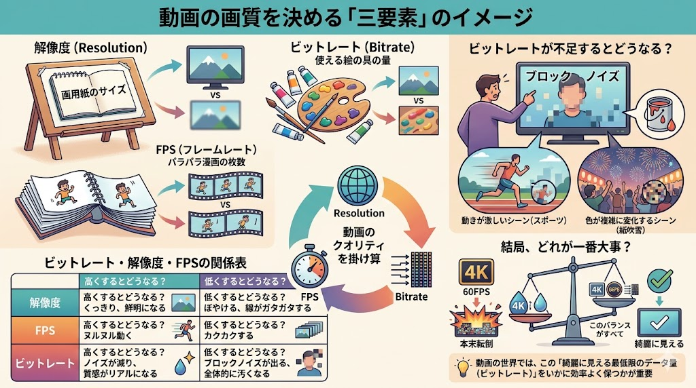

1. ビットレートの物理的定義
ビットレートとは、単位時間（1秒間）あたりに処理・伝送されるデータ量を指す。これはデジタル映像における「情報の密度」であり、解像度が画用紙のサイズ、FPSがパラパラ漫画の枚数であるならば、ビットレートはそこに投入可能な「描画リソース（絵の具の量）」に相当する。

図1：映像品質を決定する三要素の相関モデル (bit.png)
情報の「器」がどれほど大きくとも、内部を構成するデータが欠落すれば、視覚的な忠実度は著しく損なわれる。これがビットレート不足による画質劣化の物理的原点である。
2. 技術原理：量子化とブロックノイズの発生
ビットレートが不足した際、エンコーダーはデータ量を削減するために情報の量子化（間引き）を強化する。この結果、以下のような現象が顕著に発生する。
ブロックノイズ
情報を格子状のブロック単位で近似処理することで、四角いモザイク状の歪みが発生する。特に激しい動きを伴うシーンで発生しやすい。
テクスチャの消失
微細なディテールが「塗りつぶし」として処理され、被写体の質感が失われる。低ビットレート設定時の代表的な副作用である。
| 要素 | 高くした場合 | 低くした場合 |
|---|---|---|
| 解像度 | 精細・鮮明な描写 | 輪郭のジャギー・ボケ |
| FPS | 滑らかな動解像度 | コマ落ち・カクつき |
| ビットレート | 高い質感・低ノイズ | ブロックノイズ・汚染 |
3. 産業的インパクトと最適化の意義
単にビットレートを上げれば品質は向上するが、それはファイルサイズの増大と伝送コストの上昇を意味する。工学的な「最適化」とは、人間の視覚特性（HVS）を利用し、画質低下を感じさせない最低限のビットレートを維持することにある。
この動的なバランス制御は、現代のストリーミングサービスや通信インフラにおいて、ネットワーク帯域の有効活用とユーザー体験の最大化を両立させるための核心技術となっている。